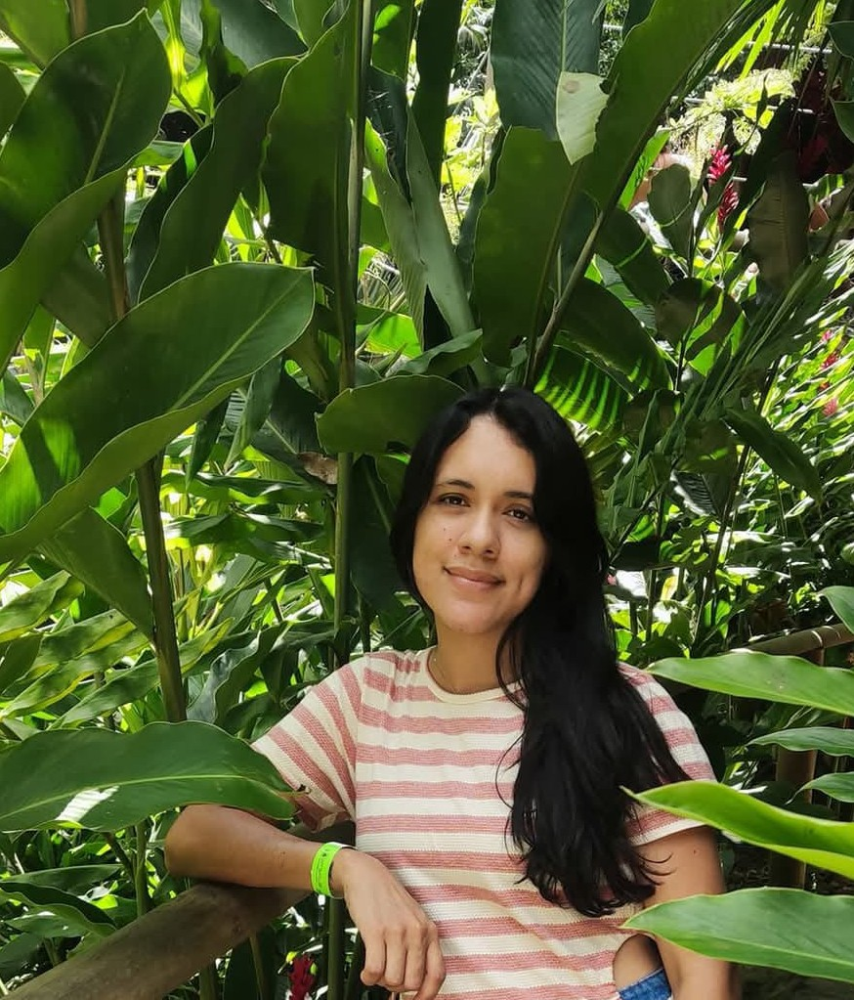

Esta página ha sido creada, con el fin de plasmar lo aprendido en el Bootcamp de Programación Básico, en el que por medio del acompañamiento de nuestros docentes, tuvimos la oportunidad de realizar ejercicios prácticos, utilizando el lenguaje de programación HTML, adquiriendo con ello conceptos importantes, que nos ayudan a enteder y a iniciar en el mundo de la programación.
Se nos ha soliciado la creación de una página web personalizada, en el cual nos presentemos y detallemos nuestros gustos, pasatiempos, etc. Haciendo uso de las diferentes etiquetas, estilos, tablas y listas, con las herramientas recomendadas Visual Studio Code, Navegador Web, y GitHub.

Soy Saray Castillo Mejía, nací en Pivijay (Magdalena), actualmente vivo en Santa Marta. Soy Técnica en Asistencia Administrativa, egresada del Sena, cuento con seis años de experiencia como Secretaria de Cartera y estoy en segundo semestre de Ingenieria de Sistemas. En cuanto a gustos y pasatiempos, la música, los lugares tranquilos y rodeados de naturaleza son lo mío.
| Lunes | Martes | Miercoles | Jueves | Viernes | Sábado | Domingo |
|---|---|---|---|---|---|---|
| Presentar Parcial | - | Ir de Compras | Ir a Peluqueria | - | - | Visitar Minka |